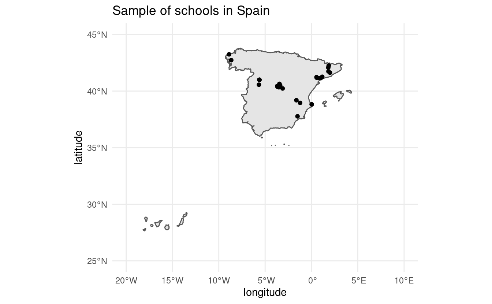
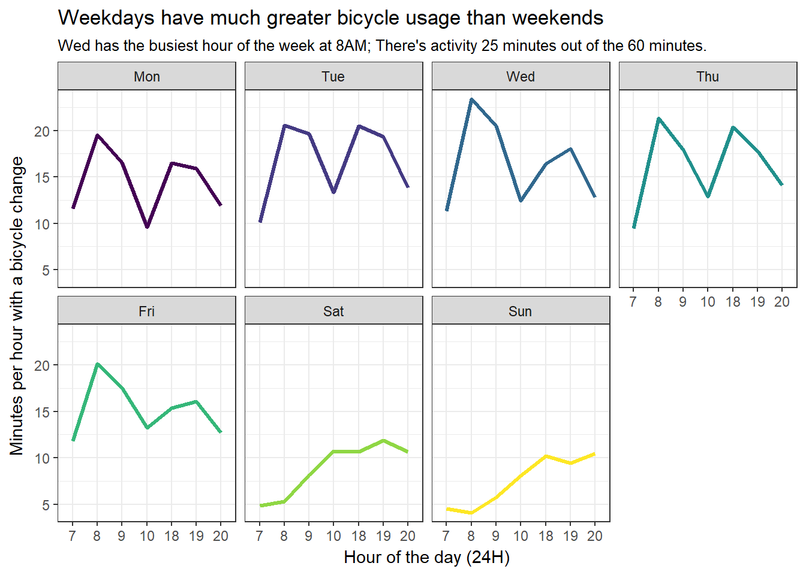

Welcome
Welcome to the world of Data Harvesting
Jorge Cimentada
Senior Data Scientist at eDreams
PhD in Sociology
How about you?
What will you expect from the course?
We’ll learn to scrape data from the internet.

What will you expect from the course?
We’ll talk to APIs

All content of this course
How will this course work?
- Tutoring on Tuesdays between 18h-20h. Requests should be per email and should receive a confirmation per email. Tutoring will be online over video call.
- Classes on Wednesdays
- Class between 18:00 - 19:30
- 15 minute break
- Class between 19:45 to 20:45
How will this course work?
Readings and exercises will be assigned for next class.
This is the material from next class – read and execute the code.
Scoring for the class:
Class participation 20%
Final project 80%
Course outline
Webscraping – 1st Feb / 8th Feb / 15th Feb
APIs - 22nd Feb / 1st March / 8th March
Automating Data Harvesting - 15th March
Presentation of projects - 20th March (pending confirmation)
Final project
Final project spreadsheet is here.
26 students / 13 groups / groups of 2
Try to find your partner as soon as possible – deadline 15 February
Final project ideas submission – deadline 1st March
2 weeks of work on final project
Final project submission – deadline 15th March
Final project presentation – 20th March (pending confirmation)
Every team will have 8 minutes to present.
Project expectations
Handout: Github repository private or public.
A clear README on how to reproduce the scraper/API program.
Key is to make it reproducible: I should be able to clone the repository and execute whatever you need to me to produce the scraper.
Document what the output is, where it is saved and what each script in the program does.
Project expectations
The idea is for some medium-hard scraping/API projects.
Scrape several sources of information
Same website or combining several websites
Meaningful dataset / Something that might help you on another class
Remember most of the mark is for this project.
API Projects: tokens should not be osted on your repository. Provide clear instructions where to place tokens for reproducibility.
Final project should be an R package.
Project expectations
Project ideas should be consulted and approved by me before the deadline
Emails can be directed at cimentadaj@gmail.com
Contribute
Contribute to the book!